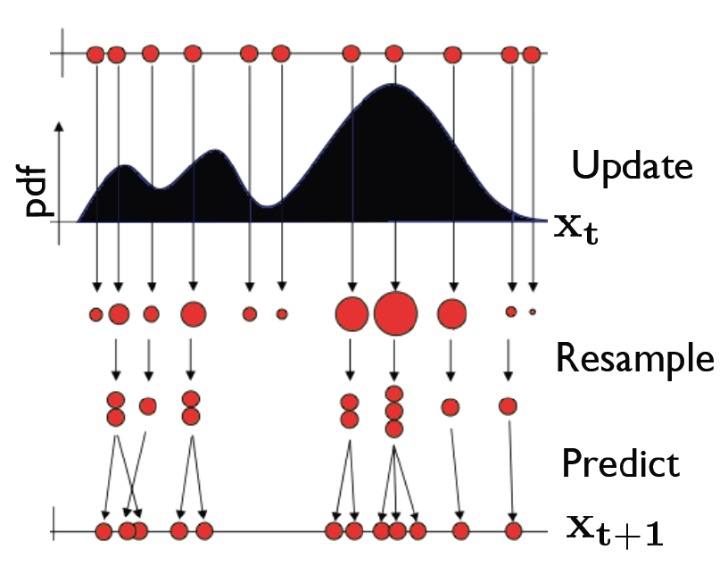
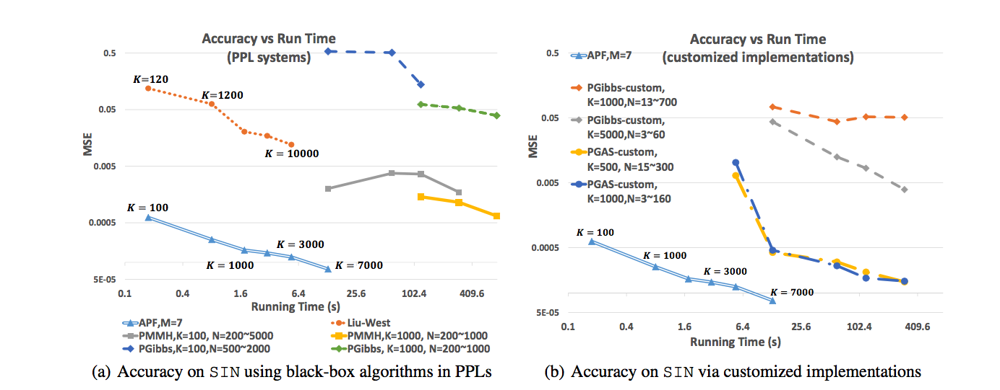

A Nearly-Black-Box Online Algorithm for Joint Parameter and State Estimation in Temporal Models
Yusuf Bugra Erol, Yi Wu, Lei Li, Stuart Russell
Table of Contents
Joint State and Parameter Estimation
 $$
\begin{eqnarray}
x_t &\sim& p(x_t \mid x_{t-1},\theta) \\
y_t &\sim& p(y_t \mid x_t,\theta)
\end{eqnarray}
$$
$$
\begin{eqnarray}
x_t &\sim& p(x_t \mid x_{t-1},\theta) \\
y_t &\sim& p(y_t \mid x_t,\theta)
\end{eqnarray}
$$
Goal: A black-box online algorithm that can represent $p(\theta,x_{0:t} \mid y_{0:t})$ efficiently and accurately for arbitrary temporal models.
Particle Filtering
$ p(x_t \mid y_{0:t}) \approx \sum w^{(i)} \delta(x_t - x_t^{(i)})$ Sample Impoverishment
- Particle filter relies on stochastic exploration
- Due to static nature of parameters, no exploration
- Resampling kills particle diversity
Problems with available remedies
- Not black-box
- Do not work for arbitrary SSMs
- Not accurate
- Offline or computationally very expensive
Particle MCMC
- Current gold-standard
- Uses PF as a proposal to MCMC
- Black-box and accurate
- Offline and batch method
- Prohibitive for long time-series applications
Resample-Move
- Rejuvenate particles: $\theta \sim p(\theta \mid x_{0:t},y_{0:t})$
- Sampling from above is $O(t)$
- For specific models with sufficient statistics, this can be done in $O(1)$
Assumed Parameter Filter
- $\theta^{(i)} \sim q_t(\theta) \approx p(\theta \mid x^{(i)}_{0:t},y_{0:t})$
- $q_t(\theta) =\arg\min_{q \in \mathcal{Q}} D \left( \hat{p}(\theta \mid x_{0:t},y_{0:t}) \mid \mid q(\theta) \right)$
- Assumed density filtering is used for approximation
Moment Matching
- Update step requires moment matching integrals
- To approximate these integrals,we utilize
- Monte Carlo summation
- Unscented Transform
- Gauss-Hermite Quadrature
- Gaussian
- Mixture of Gaussians
- Fully factorized discrete distribution
- Other exponential family
Properties
- $O(KMT)$ complexity
- Constant time per update
- Online and black-box
- Applies to arbitrary models
- We have also proven that in the infinite data limit, with $K,M \rightarrow \infty$, it is accurate.
Probabilistic Programming
We developed a compiled inference engine, the State and Parameter Estimation Compiler (SPEC), utilizing APF under BLOG
- A user can utilize SPEC to perform inference with APF for both $\{X_t\}$ and $\Theta$
- SPEC automatically analyzes the parameters, selects approximate distributions and applies APF to this model.
- By default, we use Gaussian distributions with Gauss-Hermite quadratures for continuous parameters and factored categorical distributions for discrete parameters.
Experiments
$$ \begin{array}{cc} X_t\sim\mathcal{N}(\sin(\theta x_{t-1}),1)&Y_t\sim\mathcal{N}(x_t,1)\\ \end{array} $$ - Online
- Constant time per update
- Nearly black-box
- Fits into the PPL framework
- Better estimation performance using less computation
- APF is very appealing for long time series applications where offline/batch methods are prohibitive
Try it out
- BLOG: bayesianlogic.github.io
- Swift/APF: github.com/lileicc/swift